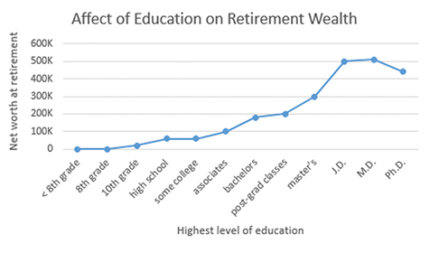
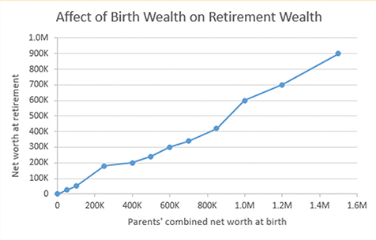

Work hard and become wealthy?
Maybe so, but work alone might not cut it. The following graphs[1] show various paths
to prosperity.
Education
More advanced Schooling helps. If you can avoid the crushing debt of student loans, all the better. Try to find a
major that you'er good at and that is good to you.

Birthright
For accruing wealth, what's even better than education? Being born wealthy. In the graph below, note how the
birthright high enders are able to become more wealthy than the education high enders. So before being born, shop
around.

1. Although the graphs' data is fabricated, the trends are real. See Lisa Keister's "Getting
Rich: America's New
Rich
and How They Got That Way" and Pew Charitable Trusts' "Economic Mobility Project."